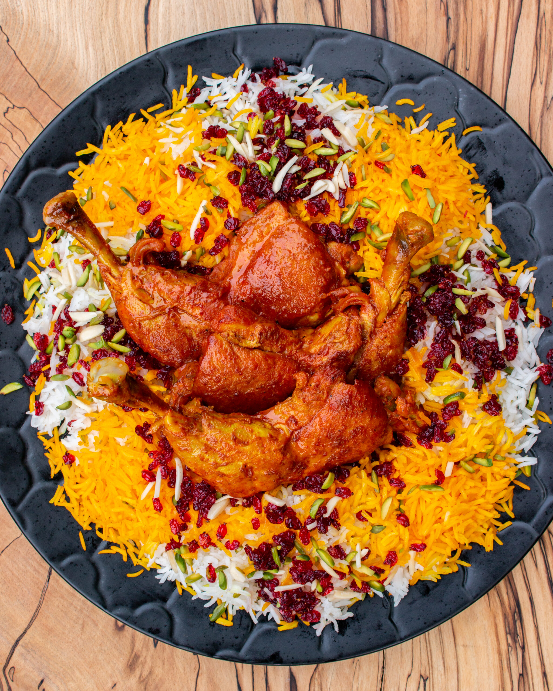

Ingredients
 Basmati Rice
Basmati Rice Barberries (Zereshk)
Barberries (Zereshk) Chicken (optional)
Chicken (optional) Saffron
Saffron Butter
Butter Sugar
Sugar Onion
Onion Salt and Pepper
Salt and Pepper
Instructions
1. Wash the rice thoroughly and soak it in water for 30 minutes.
2. Cook the rice in boiling water until partially cooked, then drain and steam it with a little butter for 20 minutes.
3. In a pan, melt butter and sauté the barberries with a pinch of sugar for 2-3 minutes. Be careful not to burn them.
4. Dissolve saffron in hot water and mix it with a portion of the cooked rice to create saffron rice.
5. If using chicken, sauté onions in a pan, add chicken pieces, and cook with salt, pepper, and a little water until tender.
6. Serve the steamed rice topped with saffron rice and barberries. Add the chicken on the side if desired.
7. Enjoy this delicious Iranian dish!